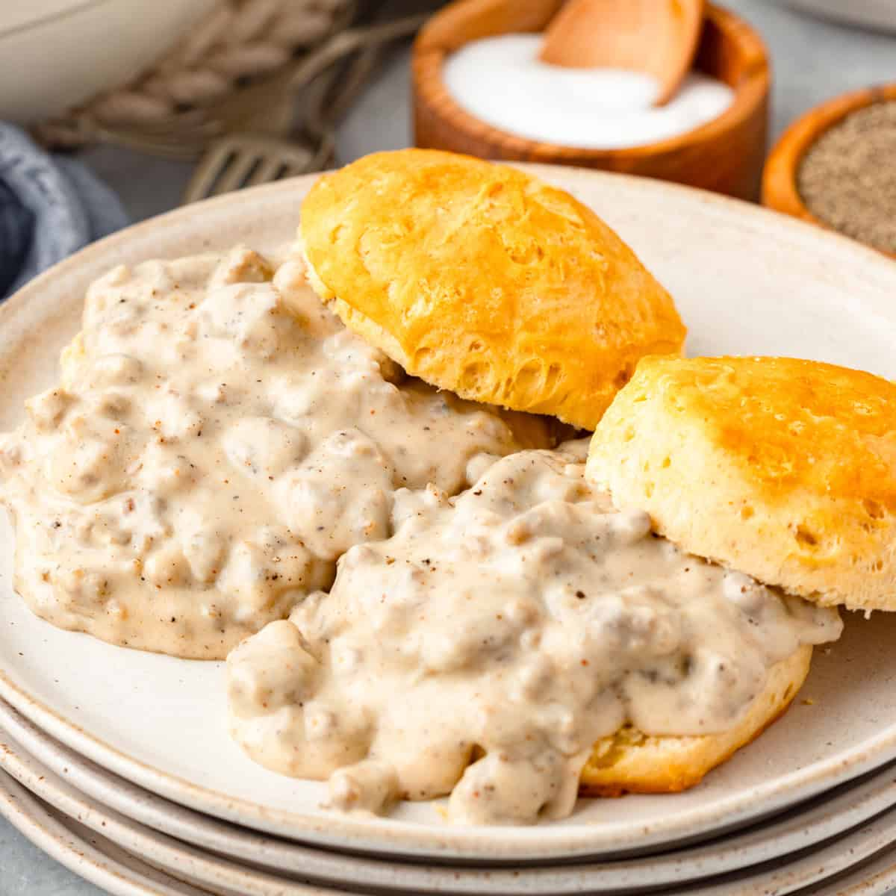

About This Recipe
This is one of my favorite recipes growing up. Warm biscuits covered in homemade sausage gravy make the perfect breakfast.
Ingredients
For the Biscuits
- 2 cups all-purpose flour
- 1 tablespoon baking powder
- 1 teaspoon sugar
- 1/2 teaspoon salt
- 1/2 cup cold butter
- 3/4 cup milk
For the Sausage Gravy
- 1 pound breakfast sausage
- 1/4 cup all-purpose flour
- 2 1/2 cups milk
- 1/2 teaspoon black pepper
- 1/2 teaspoon salt
Instructions
1. Make the Biscuits
- Preheat the oven to 425°F.
- Mix together the flour, baking powder, sugar and salt in a large bowl.
- Cut the cold butter into small pieces and mix it into the dry ingredients.
- Slowly add the milk and stir until a dough forms.
- Place the dough on a floured surface and knead a few times.
- Roll the dough until it is about 1 inch thick and cut into biscuits.
- Bake for 12-15 minutes or until golden brown.
2. Make the Sausage Gravy
- Cook the breakfast sausage in a skillet over medium heat.
- Break the sausage into small pieces until browned.
- Sprinkle flour over the sausage and stir.
- Slowly pour in the milk while stirring.
- Add the salt and black pepper.
- Simmer for 5-7 minutes until the gravy thickens.
3. Serve
Cut the warm biscuits in half and spoon the sausage gravy over the top. Serve warm and enjoy!
Tips
- Use cold butter to make fluffy biscuits.
- Add more milk if the gravy gets too thick.
- Add extra black pepper for more flavor.
- Store leftovers in an airtight container in the refrigerator for up to 3 days.